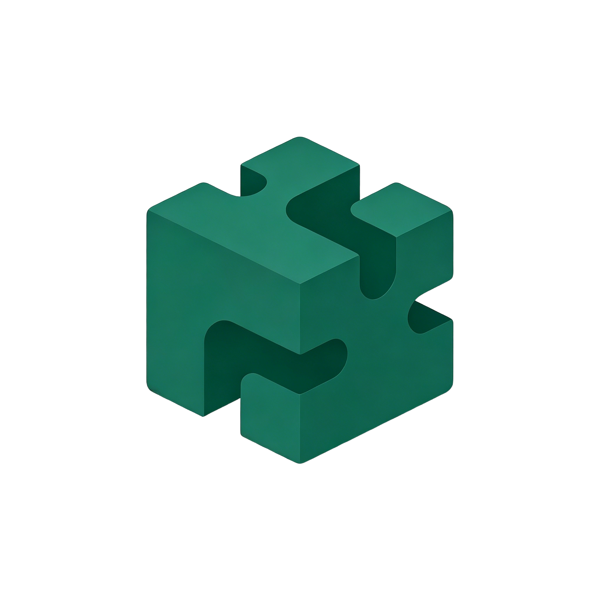

terminal
@community/terminalAdvanced Terminal
高性能终端模拟器，支持多路复用和深度系统集成。
star4.9
v3.1.0
系统健康状况、活跃插件和最近事件一览。
已安装插件
总内存
崩溃次数
运行时间
| 插件名称 | 状态 | 内存 | 操作 |
|---|---|---|---|
dock Dock | 运行中 | 12.3 MB | |
notes Text Counter | 已停止 | -- | |
picture_as_pdf PDF Toolkit | 运行中 | 8.2 MB | |
cloud 天气卡片 | 已崩溃 | 0 MB |
天气卡片检测到崩溃
10 分钟前
PDF Toolkit 已启动
2 小时前
Text Counter 手动停止
5 小时前
已安装 Quick Notes 插件
昨天, 14:30
已安装 5 个插件，2 个运行中
| ID | 名称 | Runtime | 状态 | 内存 | 崩溃 | 操作 |
|---|---|---|---|---|---|---|
| @bettercpt/dock | dock Dock | Widget | 运行中 | 12.3 MB | 0 | |
| @local/text-line-counter | notes Text Counter | Script | 已停止 | -- | 0 | |
| @local/pdf-toolkit | picture_as_pdf PDF Toolkit | Script | 运行中 | 8.2 MB | 2 | |
| @bettercpt/weather-card | cloud 天气卡片 | Widget | 已崩溃 | -- | 5 | |
| @local/quick-notes | edit_note Quick Notes | Script | 已安装 | -- | 0 |
@bettercpt/dock · v1.2.4
自定义 Dock 的视觉样式。
可见性和交互规则。
调整图标大小和屏幕边距。
此插件的 Capability 和 Permission 清单。
最近 20 条。
[10:32:15] INFO Dock plugin started, creating 6 icons
[10:32:15] INFO Icon #0 "VS Code" created at x=16
[10:32:15] INFO Icon #1 "Terminal" created at x=80
[10:32:15] INFO Icon #2 "Browser" created at x=144
[10:32:16] INFO Hover animation bound to all 6 icons
[10:32:16] INFO Click handlers registered运行时长
4d 12h
内存使用
12.3 MB
崩溃次数
开发者:BetterCPT Team
最近更新:2026-05-19
路径:~/plugins/@bettercpt/dock
发现和安装优质插件、Widget 和工具，提升你的工作流。
高性能终端模拟器，支持多路复用和深度系统集成。
实时验证、格式化和可视化复杂 JSON 结构。
经典半透明窗口边框，带现代性能优化。
精致 Widget，直接在桌面追踪 CPU、RAM 和网络使用。
{
"metadata": {
"timestamp": "2026-05-19T10:42:15Z",
"app_version": "v1.0.0",
"os": "Windows 11 (10.0.22621)"
},
"exception": {
"type": "NullPointer",
"message": "Cannot read properties of undefined (reading 'map')"
},
"pluginId": "@local/pdf-toolkit",
"crashCount": 2
}管理 BetterCPT 应用程序偏好和配置。
登录计算机时自动启动 BetterCPT。
关闭窗口时保持后台运行。
从市场安装的新插件自动启用。
插件异常退出时自动尝试重启。
当前 BetterCPT 应用程序版本。
底层系统 Host 版本。
插件和配置文件的存储位置。